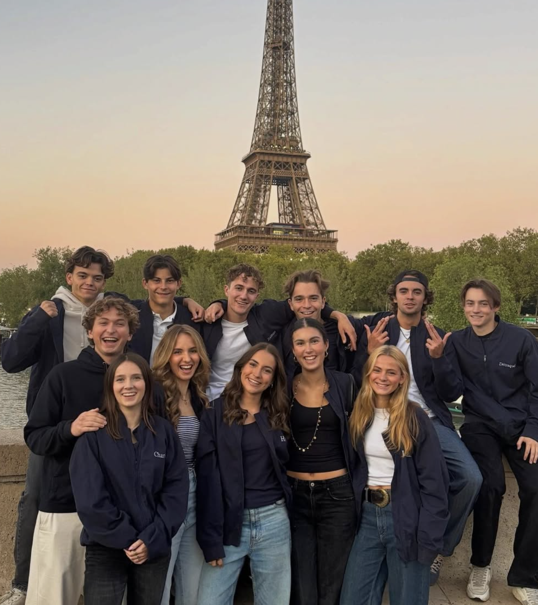
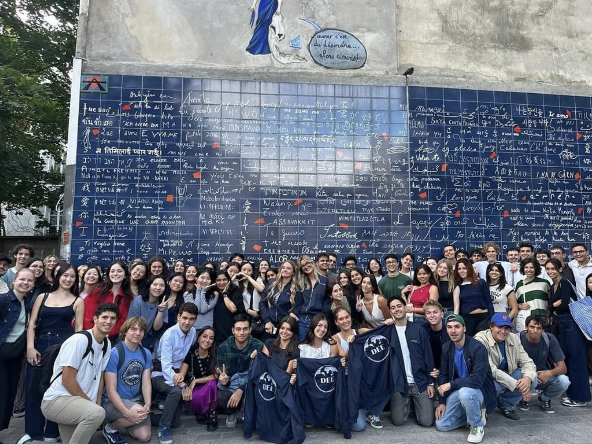
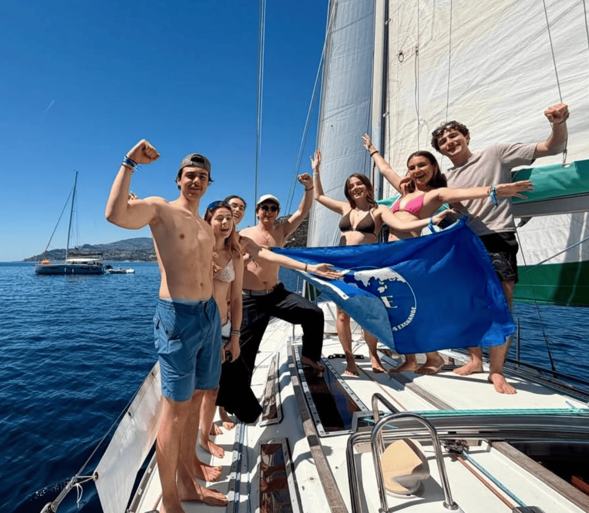

Boutique
Boutique DEE
Aucun article pour le moment.

Qui sommes-nous
DEE accompagne les étudiants internationaux de Dauphine dans leur intégration à Paris, tout en créant des moments de rencontre entre étudiants français et étrangers.
En savoir plus
Nos missions
Notre objectif est simple : faire vivre une expérience humaine, culturelle et étudiante forte aux étudiants en échange à Dauphine.
En savoir plus
Notre actu
Suivez nos derniers événements, nos projets en cours et les moments forts de la vie associative de DEE.
En savoir plusDEE — Dauphine Erasmus Exchange
L’association qui accueille, accompagne et connecte les étudiants internationaux de Dauphine à la vie parisienne, associative et étudiante.
Dauphine Erasmus Exchange, plus connue sous le nom de DEE, est l’association dédiée à l’accueil et à l’intégration des étudiants internationaux de l’Université Paris Dauphine – PSL. Depuis plusieurs années, notre mission est d’accompagner les étudiants venus du monde entier dans leur découverte de la vie étudiante à Paris, tout en favorisant les échanges culturels, les rencontres et la création d’une véritable communauté internationale au sein de l’université.
Arriver dans un nouveau pays représente toujours une expérience à la fois excitante et intimidante. Entre les démarches administratives, la découverte d’une nouvelle culture, l’adaptation à un nouvel environnement académique et la rencontre avec de nouvelles personnes, les premières semaines peuvent être particulièrement intenses pour les étudiants en mobilité internationale. C’est précisément pour répondre à ces enjeux que DEE existe : offrir un cadre chaleureux, accessible et dynamique permettant à chaque étudiant de se sentir rapidement chez lui à Dauphine et à Paris.
Notre rôle ne se limite pas à organiser des événements. Nous accompagnons les étudiants tout au long de leur semestre ou de leur année d’échange afin de rendre leur expérience plus simple, plus enrichissante et plus humaine. Nous croyons profondément que les échanges internationaux représentent bien plus qu’un simple parcours universitaire : ils sont une opportunité unique de grandir, de découvrir de nouvelles perspectives et de construire des relations durables avec des personnes venues des quatre coins du monde.
Chaque semestre, DEE met en place un large programme d’activités destiné à créer du lien entre étudiants internationaux et étudiants dauphinois. Nous organisons des soirées d’intégration, des rencontres informelles, des cafés linguistiques, des événements culturels, des activités sportives, des week-ends, des voyages ainsi que des sorties à travers Paris et en France. Ces moments permettent non seulement de découvrir la culture française, mais aussi de partager les cultures, traditions et expériences de chacun dans un esprit d’ouverture et de convivialité.
Paris est une ville exceptionnelle, riche d’histoire, d’art, de culture et d’opportunités. Pourtant, il peut parfois être difficile pour un étudiant étranger de réellement découvrir la ville au-delà de son quotidien universitaire. C’est pourquoi DEE cherche à faire vivre aux étudiants internationaux une expérience parisienne authentique, à travers des visites, des activités et des événements qui leur permettent d’explorer la capitale sous toutes ses facettes.
L’association repose avant tout sur des valeurs de partage, de diversité, d’inclusion et de bienveillance. Nous sommes convaincus que les rencontres internationales enrichissent autant les étudiants étrangers que les étudiants locaux. À travers DEE, nous voulons créer un espace où chacun peut échanger, apprendre des autres, développer sa curiosité et construire des amitiés qui dépassent les frontières.
Au-delà des événements et des activités, DEE représente également un véritable réseau étudiant. Beaucoup de liens créés au sein de l’association continuent bien après la fin des échanges universitaires. Notre communauté rassemble des étudiants aux parcours, cultures et ambitions variés, unis par une même envie : vivre pleinement une expérience internationale unique.
Nous travaillons chaque année pour améliorer l’accueil des étudiants internationaux et rendre leur intégration toujours plus fluide et agréable. Notre équipe est composée d’étudiants engagés, motivés et passionnés par les échanges culturels, qui mettent leur énergie au service de la communauté internationale de Dauphine.
Rejoindre DEE, c’est bien plus que participer à des événements. C’est intégrer une communauté ouverte sur le monde, rencontrer des personnes inspirantes, découvrir de nouvelles cultures et créer des souvenirs inoubliables au cœur de Paris. Que vous soyez étudiant international ou étudiant dauphinois, DEE est l’endroit idéal pour vivre pleinement l’expérience internationale de Dauphine.
L’équipe
Le bureau coordonne l’association, structure les projets et assure le lien entre les pôles, l’université et les étudiants internationaux.
Aprile Shimowski
Chloé Pointel
Thibault Rousseau
Organisation
Chaque pôle porte une partie essentielle de la vie de DEE : événements, communication, partenariats, sorties et accompagnement des Erasmus.
Anime les moments conviviaux et les formats informels de rencontre.
Imagine et organise les grands événements festifs de l’association.
Développe les collaborations avec les acteurs étudiants et professionnels.
Prépare les sorties, voyages et expériences collectives marquantes.
Fait vivre l’image de DEE sur les réseaux et auprès des étudiants.
Accompagne les étudiants internationaux au quotidien dans leur intégration.
Nos missions
DEE accompagne les étudiants internationaux dès leur arrivée à Dauphine et leur fait découvrir Paris à travers des événements humains, culturels et festifs.
La mission de Dauphine Erasmus Exchange est d’offrir aux étudiants internationaux bien plus qu’un simple accueil administratif à leur arrivée à l’Université Paris Dauphine – PSL. Nous voulons leur permettre de se sentir attendus, accompagnés et rapidement intégrés à la vie étudiante dauphinoise dès leurs premiers jours à Paris.
Arriver dans un nouveau pays représente toujours une étape importante. Entre la découverte d’une nouvelle ville, d’un nouveau système universitaire, d’une nouvelle culture et la nécessité de créer rapidement de nouveaux repères, les premières semaines d’un échange universitaire peuvent être aussi enrichissantes que déstabilisantes. C’est pourquoi DEE cherche avant tout à créer un environnement chaleureux, accessible et humain, dans lequel chaque étudiant international peut trouver sa place et construire des liens durables.
Notre objectif est de transformer l’expérience Erasmus en une véritable aventure humaine et culturelle. Nous voulons que les étudiants ne gardent pas seulement le souvenir d’un semestre académique à Paris, mais celui d’une expérience complète, faite de rencontres, de découvertes, de voyages, d’événements et de moments partagés.
Tout au long de l’année, nous organisons des activités destinées à favoriser les échanges entre étudiants internationaux et étudiants dauphinois. À travers nos événements, nous cherchons à créer une communauté ouverte, dynamique et inclusive où chacun peut facilement rencontrer de nouvelles personnes, découvrir différentes cultures et vivre pleinement la vie étudiante parisienne.


Deux fois par an, au début de chaque semestre universitaire, DEE organise une Welcome Week complète afin d’accompagner les nouveaux étudiants internationaux dans leurs premiers jours à Dauphine et à Paris.
Ces semaines d’intégration constituent souvent le premier contact des étudiants avec leur nouvelle vie en France. Elles sont pensées comme un moment essentiel pour créer rapidement des liens, découvrir l’université et prendre ses marques dans un environnement encore inconnu.
Pendant les Welcome Weeks, nous organisons des accueils directement sur le campus, des rencontres avec les étudiants français, des présentations de la vie associative, des visites de l’université ainsi que plusieurs activités conviviales permettant aux étudiants de se rencontrer naturellement.
Nous proposons également des visites de Paris afin de permettre aux nouveaux arrivants de découvrir les lieux emblématiques de la capitale, son histoire, son ambiance et ses différents quartiers. Ces moments offrent l’occasion de créer rapidement des amitiés et de commencer le semestre dans une atmosphère détendue et internationale.
Les Welcome Weeks représentent aujourd’hui l’un des moments les plus importants de la vie de l’association. Elles donnent le ton du semestre et permettent de construire dès le départ une véritable communauté entre étudiants venus du monde entier.
Tout au long du semestre, DEE organise régulièrement des Bars Erasmus, devenus au fil des années des rendez-vous incontournables de la communauté internationale de Dauphine.
Ces soirées permettent aux étudiants de continuer à se retrouver après les premières semaines d’intégration et de maintenir le lien créé pendant la Welcome Week. Elles favorisent les échanges entre étudiants internationaux, étudiants français et parfois même anciens Erasmus revenus à Paris.
Les Bars Erasmus ont pour objectif de créer des moments simples, accessibles et conviviaux où chacun peut rencontrer de nouvelles personnes dans une ambiance détendue. Ils permettent aussi de mélanger les promotions, les nationalités et les parcours, renforçant ainsi l’esprit de communauté qui caractérise DEE.
Au-delà des soirées elles-mêmes, ces événements participent pleinement à l’expérience Erasmus des étudiants. Ils deviennent souvent des souvenirs marquants du semestre et jouent un rôle important dans la création d’amitiés durables.
Grâce à notre partenariat avec Paris Erasmus Life, DEE ouvre également ses étudiants à un réseau beaucoup plus large d’étudiants internationaux présents dans toute la capitale.
Ce partenariat permet de participer à des événements communs réunissant des étudiants issus de nombreuses universités et écoles parisiennes. Il offre ainsi aux étudiants de Dauphine l’opportunité de découvrir une dimension encore plus internationale de leur expérience à Paris.
À travers cette collaboration, les étudiants peuvent participer à des soirées, des rencontres inter-écoles, des voyages, des week-ends touristiques et différentes activités organisées dans plusieurs villes françaises et européennes.
Cette ouverture vers d’autres communautés internationales permet aux Erasmus de multiplier les rencontres, d’élargir leur réseau et de profiter pleinement de la richesse culturelle et étudiante qu’offre Paris.
DEE participe également activement à la vie associative de Dauphine. L’association collabore régulièrement avec d’autres associations étudiantes afin d’intégrer les étudiants internationaux à l’ensemble de la vie du campus.
Soirées étudiantes, événements sportifs, projets collectifs, voyages, activités culturelles ou initiatives solidaires : notre objectif est de permettre aux Erasmus de découvrir pleinement l’écosystème associatif dauphinois et de ne jamais rester isolés pendant leur échange.
Nous voulons créer des passerelles entre les étudiants internationaux et les étudiants français afin de favoriser des échanges naturels et enrichissants pour tous. Cette mixité constitue l’une des valeurs fondamentales de DEE et contribue à faire vivre un véritable esprit international au sein de Dauphine.
Plus qu’une simple association d’accueil, DEE est aujourd’hui une communauté étudiante dynamique qui accompagne les étudiants internationaux tout au long de leur expérience à Paris. Notre ambition est de rendre chaque échange universitaire plus humain, plus vivant et plus mémorable, en créant des moments qui dépassent largement le cadre académique.
Nos événements emblématiques
Au-delà de l’accueil et des sorties, DEE est aussi reconnue pour ses deux grandes soirées emblématiques : les Folies Dau en novembre et l’Eldorado en février. Ces événements rassemblent étudiants internationaux, dauphinois et partenaires autour de moments forts qui marquent chaque semestre.
Les Folies Dau sont l’un des temps forts du premier semestre. Cette soirée incarne l’énergie de DEE : une ambiance internationale, une organisation ambitieuse et une volonté de rassembler les étudiants autour d’un événement fédérateur.
L’Eldorado ouvre le second semestre avec la même ambition : créer une soirée mémorable, festive et ouverte, qui donne le ton de la nouvelle période Erasmus à Dauphine.
Galerie
Notre actu
Retrouvez ici les événements à venir, les dernières actus et les temps forts de l’association.
Actualités
Dernière actu
DEE était présente à Imperia pour la SPI 45 : une expérience forte, entre esprit d’équipe, rencontres étudiantes et souvenirs collectifs.
Soirée emblématique
Une nouvelle édition de l’Eldorado qui a rassemblé les étudiants autour d’une soirée marquante, festive et fidèle à l’énergie de DEE.
Accédez aux photos de la soiréeSoirée emblématique
Les Folies Dau ont une nouvelle fois marqué le premier semestre avec une soirée fédératrice, internationale et incontournable dans la vie de l’association.
Accédez aux photos de la soirée@dauphineerasmus
Voir notre InstagramBoutique
Aucun article pour le moment.
Billetterie
Aucun événement à venir.
Contactez-nous
Que vous soyez étudiant international, partenaire, association dauphinoise ou simplement curieux, l’équipe DEE est là pour vous répondre.